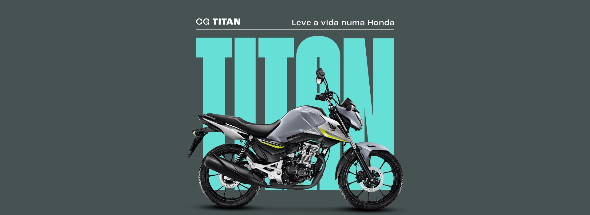

Especificações Técnicas

Yamaha YZF-R3
- Cilindrada: 321 cc
- Potência: ~ 42,7 cv a 10.750 rpm
- Torque: ~ 29,6 N·m a 9.000 rpm
- Transmissão: 6 marchas
- Freios: Disco dianteiro / disco traseiro
- Pneus: Dianteiro 110/70-17 / Traseiro 140/70-17
- Peso: ~ 175 kg (em ordem de marcha)
- Tanque de combustível: ~ 14 litros

Honda CG 160 Titan
- Tipo de motor: OHC, Monocilíndrico, 4 tempos, arrefecido a ar
- Cilindrada: 162,7 cc
- Potência Máxima: 10,6 KW (14,4 CV) a 8.000 rpm (Gasolina) / 10,8 KW (14,7 CV) a 8.000 rpm (Etanol)
- Torque Máximo: 13,8 N·m (Gasolina) / 14,0 N·m (Etanol) a 6.750 rpm
- Transmissão: 5 velocidades
- Sistema de Partida: Elétrico
- Diâmetro x Curso: 57,3 x 63,096 mm
- Relação de Compressão: 9,5 : 1
- Tanque de combustível: 14 litros
- Comprimento x Largura x Altura: 2030 x 747 x 1094 mm
- Distância entre eixos: 1311 mm
- Distância mínima do solo: 190 mm
- Altura do assento: 796 mm
- Peso seco: 120 kg
- Suspensão dianteira: Garfo telescópico / curso de 135-120 mm
- Suspensão traseira: Dois amortecedores / curso de 88-106 mm
- Freio dianteiro: Disco; disco de 209,90 mm / 240 mm
- Freio traseiro: Disco; disco de 186 mm / 220 mm
- Pneus: Dianteiro 80/100-18 / Traseiro 100/80-18